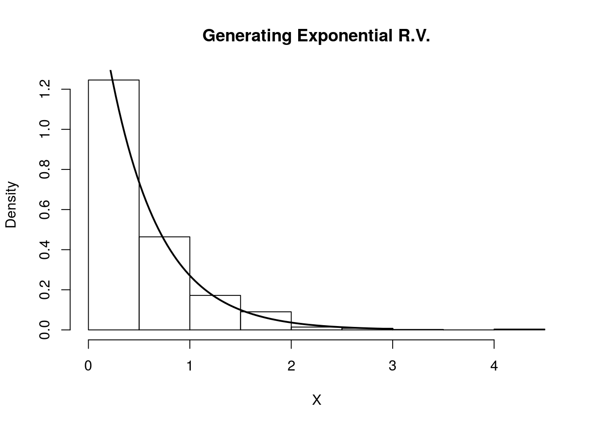
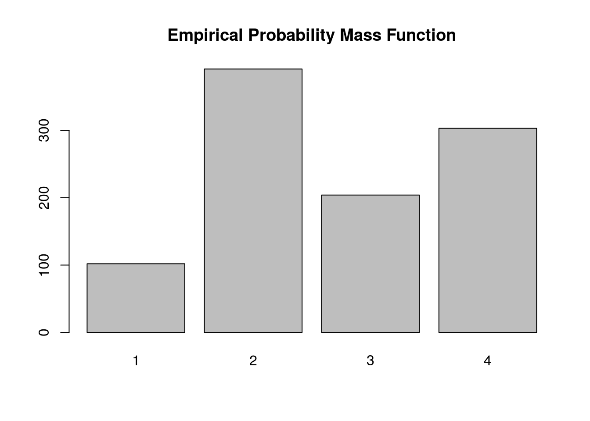

Last updated: 2017-03-06
Code version: c7339fc
This document assumes basic familiarity with probability theory.
Inverse transform sampling is a method for generating random numbers from any probability distribution by using its inverse cumulative distribution \(F^{-1}(x)\). Recall that the cumulative distribution for a random variable \(X\) is \(F_X(x) = P(X \leq x)\). In what follows, we assume that our computer can, on demand, generate independent realizations of a random variable \(U\) uniformly distributed on \([0,1]\).
Assume we want to generate a random variable \(X\) with cumulative distribution function (CDF) \(F_X\). The inverse transform sampling algorithm is simple:
1. Generate \(U \sim \text{Unif}(0,1)\)
2. Let \(X = F_X^{-1}(U)\).
Then, \(X\) will follow the distribution governed by the CDF \(F_X\), which was our desired result.
Note that this algorithm works in general but is not always practical. For example, inverting \(F_X\) is easy if \(X\) is an exponential random variable, but its harder if \(X\) is Normal random variable.
Now we will consider the discrete version of the inverse transform method. Assume that \(X\) is a discrete random variable such that \(P(X = x_i) = p_i\). The algorithm proceeds as follows:
1. Generate \(U \sim \text{Unif}(0,1)\)
2. Determine the index \(k\) such that \(\sum_{j=1}^{k-1} p_j \leq U < \sum_{j=1}^k p_j\), and return \(X = x_k\).
Notice that the second step requires a search.
Assume our random variable \(X\) can take on any one of \(K\) values with probabilities \(\{p_1, \ldots, p_K\}\). We implement the algorithm below, assuming these probabilities are stored in a vector called p.vec.
# note: this inefficient implementation is for pedagogical purposes
# in general, consider using the rmultinom() function
discrete.inv.transform.sample <- function( p.vec ) {
U <- runif(1)
if(U <= p.vec[1]){
return(1)
}
for(state in 2:length(p.vec)) {
if(sum(p.vec[1:(state-1)]) < U && U <= sum(p.vec[1:state]) ) {
return(state)
}
}
}Assume \(Y\) is an exponential random variable with rate parameter \(\lambda = 2\). Recall that the probability density function is \(p(y) = 2e^{-2y}\), for \(y > 0\). First, we compute the CDF: \[F_Y(x) = P(Y\leq x) = \int_0^x 2e^{-2y} dy = 1 - e^{-2x}\]
Solving for the inverse CDF, we get that \[F_Y^{-1}(y) = -\frac{\ln(1-y)}{2}\]
Using our algorithm above, we first generate \(U \sim \text{Unif}(0,1)\), then set \(X = F_Y^{-1}(U) = -\frac{\ln(1-U)}{2}\). We do this in the R code below and compare the histogram of our samples with the true density of \(Y\).
# inverse transfrom sampling
num.samples <- 1000
U <- runif(num.samples)
X <- -log(1-U)/2
# plot
hist(X, freq=F, xlab='X', main='Generating Exponential R.V.')
curve(dexp(x, rate=2) , 0, 3, lwd=2, xlab = "", ylab = "", add = T)
Indeed, the plot indicates that our random variables are following the intended distribution.
Let’s assume we want to simulate a discrete random variable \(X\) that follows the following distribution:
| x_i | P(X=x_i) |
|---|---|
| 1 | 0.1 |
| 2 | 0.4 |
| 3 | 0.2 |
| 4 | 0.3 |
Below we simulate from this distribution using the discrete.inv.transform.sample() function above, and plot both the true probability vector, and the empirical proportions from our simulation.
num.samples <- 1000
p.vec <- c(0.1, 0.4, 0.2, 0.3)
names(p.vec) <- 1:4
samples <- numeric(num.samples)
for(i in seq_len(num.samples) ) {
samples[i] <- discrete.inv.transform.sample(p.vec)
}
barplot(p.vec, main='True Probability Mass Function')barplot(table(samples), main='Empirical Probability Mass Function')
Again, the plot supports our claim that we are drawing from the true probability distribution
sessionInfo()R version 3.3.2 (2016-10-31)
Platform: x86_64-pc-linux-gnu (64-bit)
Running under: Ubuntu 14.04.5 LTS
locale:
[1] LC_CTYPE=en_US.UTF-8 LC_NUMERIC=C
[3] LC_TIME=en_US.UTF-8 LC_COLLATE=en_US.UTF-8
[5] LC_MONETARY=en_US.UTF-8 LC_MESSAGES=en_US.UTF-8
[7] LC_PAPER=en_US.UTF-8 LC_NAME=C
[9] LC_ADDRESS=C LC_TELEPHONE=C
[11] LC_MEASUREMENT=en_US.UTF-8 LC_IDENTIFICATION=C
attached base packages:
[1] stats graphics grDevices utils datasets methods base
other attached packages:
[1] workflowr_0.4.0 rmarkdown_1.3.9004
loaded via a namespace (and not attached):
[1] backports_1.0.5 magrittr_1.5 rprojroot_1.2 htmltools_0.3.5
[5] tools_3.3.2 yaml_2.1.14 Rcpp_0.12.9 stringi_1.1.2
[9] knitr_1.15.1 git2r_0.18.0 stringr_1.2.0 digest_0.6.12
[13] gtools_3.5.0 evaluate_0.10 This site was created with R Markdown